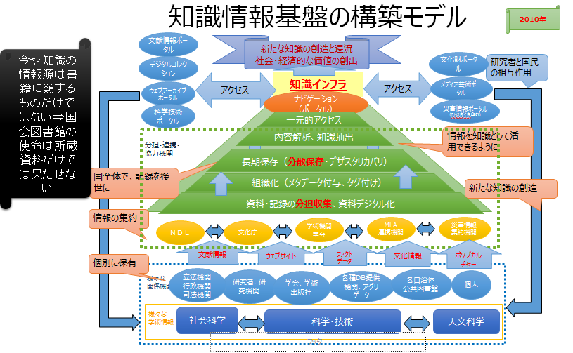
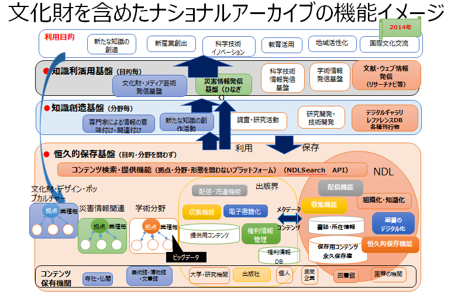
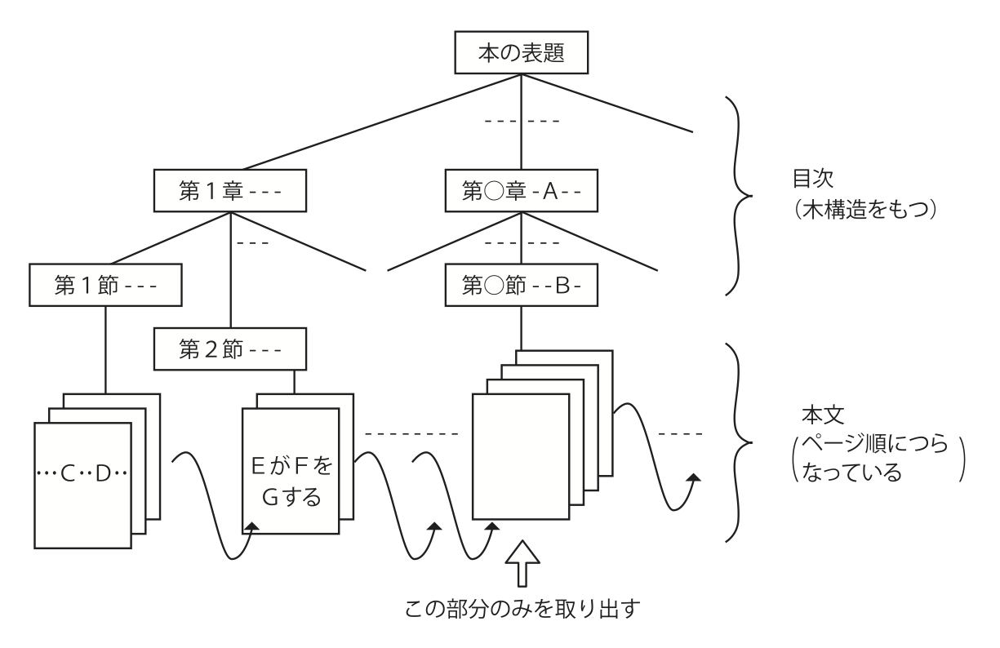
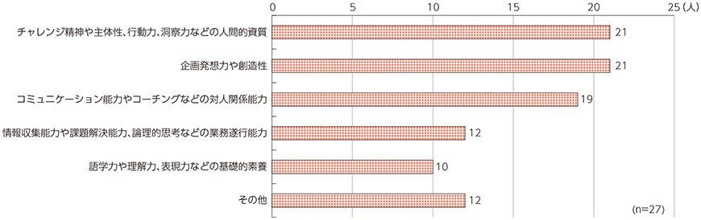
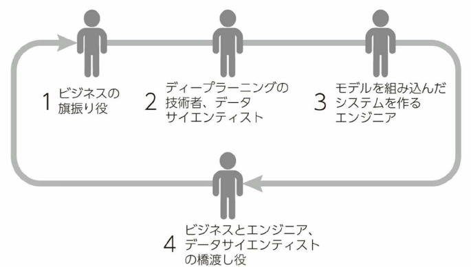
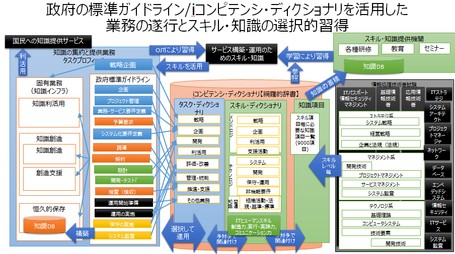
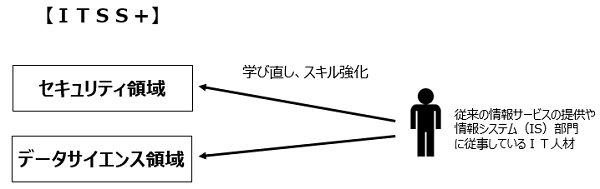
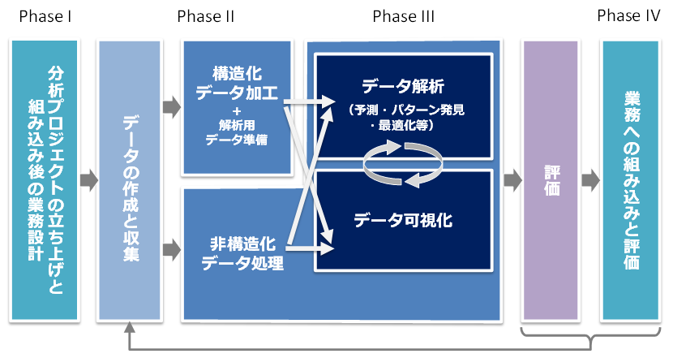
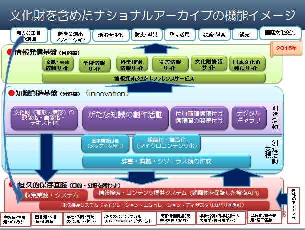
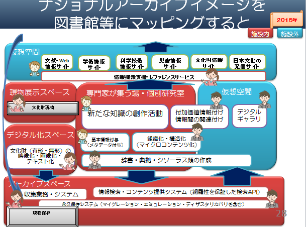

- Bib10-06 AIを活用した知の共有化の進展への期待【要約】
- 【2017年8月28日】
- 目的・伝えたいこと
- 目的
- 自分の理念で進めてきたことの集大成
- 今後進めてほしい方向性
- 現役時代に目標としてきたが到達できなかったこと
- 実現に当たっては、効率的・効果的に進めてほしいこと
- 伝えたいこと
- 構成
-
- 電子図書館構想、知識インフラ構想が、夢ではなく、やっと現実にできる時代になった
-
- 目の前の業務だけにとらわれることなく、広く視野を持って進むべき道を探り、学ぶ。勉強会やコミュニティなど、学びの場は周囲にある。自己研さんによって能力を高めれば高めただけ、社会をリードしていく人材になっていく
-
- 人工知能の進展
- デジタルアーカイブは、文化資源を保有する組織、その資源を利活用する組織のデジタルフォーメーションである
- 「未来の図書館を作るには」【長尾先生】の再認識
- 「未来の図書館を作るとは」も、人工知能が実用レベルになったことで、「未来の図書館」ではなく、「今の図書館を作るとは」として設計構築できるようになった
-
- ビッグデータとしての知の共有化、人工知能が適用された知識インフラの構築
- このような時代に、従来の業務やサービスは、人工知能が組み込まれたシステムやロボットに支援されてサービスが省力化され、さらに今まで不可能だった新たなサービスが生まれようとしている
- ナショナルアーカイブの各基盤の概念
- 我が国の多様な文化を知識として保存・継承する役割、様々な分野の専門家が参加し、新たな文化を知識として創造していくための社会的な基盤としての役割、それらの知識を利用目的に応じて発信する役割、そして、これらの仕組みを統括し運用していく役割が考えられ、文化的資産を館種毎に集約している拠点と、新たな知識を創造し発信するしている拠点等が分担して構築・運用していくことが必要
-
- ビッグデータとしての知的情報資源
-
- 人工知能と人間の能力と役割（一般論）
- AIの実用段階に達した今、今まで人が担ってきた部分の作業も、精密化すると一部が人工知能を活用したほうが効率的なことが多々ある
- 図書館員の役割と資質
- 一気に人工知能に置き換わらなくても、少なくとも職員から、アルバイト、非常勤、外部委託へとシフトしていくものが多い。その中で図書館職員としての仕事を見極める必要がある
- 政府標準ガイドラインに沿った開発タスクとドキュメント
- 開発は、政府の調達ガイドラインに沿うことが有効
- 業務遂行のタスクとスキル・知識の蓄積の関係
- iコンピテンシ・ディクショナリを活用した業務の遂行とスキル・知識の選択的習得方法
- 必要なスキル。知識は、網羅性を確保するより、担当するタスクに応じて選択的に順次習得することが効率的
-
- 知識インフラの構築は、ビッグデータや人工知能の活用が必須であり、典型的なデータサイエンス領域として位置づけられる
-
- 図書館員等に求められるもの
-
- 効率化、人はより創造的な業務へ
- 今の延長で可能な範囲での実施でなく、今後10年の人工知能技術の進展、その時点の社会のニーズを見据え、国全体で何をする必要があるかを考える
-
- 文化情報資源を中核とした「知識インフラの構築と利活用」のサービスの方向性を見極めて、提供する機関の1つとしての図書館情報サービスの構築と提供を考えていくことが重要と考える
- 2040年代には、人工知能が意志や感情を持って人間を超える「シンギュラリティ―時代」が来ると言われて、また10年後にはどんな新しい技術が確立しているかわからないが、現時点での人工知能の実用化レベルでも、社会は大きく変革する。
その社会の中での図書館サービスは、従来の延長線上での業務を行っていては、有益なサービスを提供する機関としての存立が危ぶまれる - 人工知能により、人の仕事が奪われるのではなく、より人間らしい仕事にシフトしていく。 仕事が奪われるとしたら、むしろ、人工知能を活用した省力化と新しいサービスに取り組まなかったために事業を継続できなくなる機関・組織であろう。
-
- はじめに
-
-
- 図書館サービスの将来方向として、出版物に限らず様々な情報機関が保有する文化情報資源を一元的に利活用できるようにして、新たな知識を創造する「知識インフラ」としての方向性を検討してきた
- その方向性の実現に、メタデータの集約による統合検索が可能な「知識インフラ」を発展させ、情報資源そのもの（画像データ、本文フルテキスト等）をビッグデータとして活用して、人工知能により知識化し、ファクトを取り出せる基盤としての「真の知識インフラ」の構築の実現を見通せる時代になった
- 「電子図書館」は、「真の知識インフラ」として、「情報の集合体としてのアーカイブ」に留まらず、「人工知能により知識化」され、利用者に対して「電子図書館」を「脳の外部記憶」として利用を可能にする実用化システムの構築も実現可能なところまで到達しつつある。
- そのような時代に、図書館を含めた文化情報資源の保有機関は、どんな業務・サービスに人工知能を活用すべきか、そのためにどんな知識とスキルを持つべきかを考察する
-
-
- すでにデジタルトランスフォーメーション(デジタル変革)は始まっている
- 第4次産業革命の入り口
- 今は、IoT、ビッグデータ、ロボット、AI等の技術革新による、第4次産業革命の入り口にいる
- あらゆるものがインターネットに接続するIoTの広がり、あらゆる情報がビッグデータとして活用され、AI技術により、様々な分野で定型的な業務はもとより、人海戦術では不可能だった業務まで、AI技術を適用したサービス、ロボットの適用が始まっている
- 既存のビジネスや業務に新技術を取り入れるだけでなく、ビジネスモデルを変え、経済活用のみならず、個人の生活や社会構造まで影響が及ぶ
- デジタルフォーメーション（デジタル変革）とは、あらゆる情報がデジタル化され、IT技術によって、社会や産業、企業、人のあり方や働き方が変わっていくこと
- 第4次産業革命が進むにつれて、発展するビジネスと縮小するビジネスが明確になっていく
- 時代環境が大きく変わる時、それにそぐわないビジネスは淘汰されていく
- 匠の技的な高度な伝統的技能を要する作業や、旧来の延長線で仕組みの高度化、洗練により、生き残れるビジネスもあるが、現状維持のビジネスの多くは、相対的に意義を失う可能性が高い
- IoT、ビッグデータ、ロボット、AI等の技術を、クラウドコンピューティングやモバイル環境で活用できるようになったことは、少ない投資で事業を立ち上げることが可能であり、中小企業、ベンチャー企業や個人の活躍のまたとないチャンスである
- 組織として、
- 時代の潮流を捉えて、組織が社会の変化の中で、時代に適合して発展できる道を探り、ビジョンをはっきり示すことが重要であり、それは組織管理者者の責務
- 「デジタルトランスフォーメーション」を実現するには、ビジネスとデジタルのスキルを併せ持った人材の育成と獲得をしていく必要がある
- 個人として、
- 自らも「デジタルトランスフォーメーション」の流れの中にあることの意識
- 求められるのは、周囲を巻き込みながら改革を進める能力やビジネスとデジタルを結び付けて全体をデザインする能力を持った人材になること
- 目の前の業務だけにとらわれることなく、広く視野を持って進むべき道を探り、学ぶ。勉強会やコミュニティなど、学びの場は周囲にある。自己研さんによって能力を高めれば高めただけ、社会をリードしていく人材になっていく
- 本格的な人工知能の実用化を迎えて
- 電子図書館は、図書館界、出版界におけるデジタルフォーメーションである
 デジタルアーカイブは、文化資源を保有する組織、その資源を利活用する組織のデジタルフォーメーションである
デジタルアーカイブは、文化資源を保有する組織、その資源を利活用する組織のデジタルフォーメーションである- 今まで
- 「電子図書館サービス構想」の実現形としての「デジタルコレクション」、「NDLサーチ」、「リサーチナビ」
- 電子図書館サービスの発展形としての「知識インフラ構想」
- 「知識インフラ構想」の実現形を目指して分野を特定した「東日本大震災アーカイブ」
- 「東日本大震災アーカイブ」の発展形として分野を文化情報資源まで拡大した「文化資源のナショナルアーカイブ」
- 今後
- デジタルトランスフォーメーション時代の知識インフラの構築
- 人工知能の進展
- ビッグデータをディープラーニングにより学習できるようになったことにより、第3次人工知能ブームが起き、様々な分野で実用化が進んできた
- 人間の頭脳が成長しなければ、今の技術の延長線で、コンピュータが人間の頭脳を上回るシンギュラリティ（技術的特異点）が2044年までに起きると言われている
- 突然変異的な技術が生み出された場合、もっと早く訪れる可能性もある
- 【別途参照】人工知能の歩み
- 第1次ブーム
- 1956~1960年代
- 第2次ブーム
- 1980年代
- 教師データにより人間が特徴量を抽出
- 2012年以降
- 技術
- ディープラーニング
- 特徴表現学習
- 自然言語処理
- 音声認識
- 画像認識
- ニューラルネットワークの進化
- ニューラルネットワーク以外の技術の進化
- 「未来の図書館を作るには」【長尾先生】の抜粋
- 「電子図書館」、「未来の図書館を作るには」の再認識
- 「電子図書館 」岩波文庫, 1994年, 長尾真
- 第2次人工知能ブームの終盤、第3次人工知能ブームへの助走段階
- 既存の図書や資料をデジタル化すればそれで電子図書館が実現するかといえばそうではない。あるべき姿はデジタル化された情報を縦横に使いこなし、まったく新しい知的空間を創造するための図書館である。そのために何が必要かを説く本書の構想は挑戦的かつ刺激的な未来の設計図だ。
- 「未来の図書館を作るとは」が刊行された2012年からの技術の進展
- 「未来の図書館を作るには」が発行された2012年初めは、まだ第3次人工知能ブームの前で、人工知能がブレークスルーしていなかった。
- 「未来」の話しとして、人工知能を活用したシステムにより、図書館サービスや図書館員の仕事の変革が示唆されていたが、ディープラーニングの実用化により、今まさに実現可能になっていると思う
- しかし、2012年以降のディープラーニングに代表される人工知能の進展、資料のデジタル化、デジタルコンテンツのオープンデータ化、LOD化の加速化により、「未来」とされてきた相当な範囲の仕組みで、今後5年程度でできることが多くなってきたように思える
- 人工知能と図書館
- 人間の持っている知識は頭脳の中にあり、種々の知識が何らかの関係性によってつながれていて、連想的に関係する知識が取りだされている【長尾先生】
- 図書館においてもぼう大な書物の中に存在する知識が関連性をもって書物という単位を超えてつなげられ、それが取り出されることが大切であろう。【長尾先生】
- 本のある部分に存在する単語や概念を集め、それらに近い単語や概念が存在する部分を他の本について網羅的に調べる【長尾先生】
- 関連する知識を人間頭脳の中のネットワークのようにつないで、利用者の要求に応じて提示できるような形の電子図書館の内容の組織化が望まれているのである。【長尾先生】
- 電子図書館における図書・資料は部品に解体され、それぞれが種々の観点からリンク付けされた巨大なネットワーク構造が作られるようにする。これは1つの社会で共有する中立的な知識構造、知識システムである。【長尾先生】
- 個人によって違った知識の構造の部分については、その人の力によって種々の検索方式を試み、自分の必要とする情報をとり出して中立的な知識の構造に付加してゆくことが出来ねばならないし、またそれによって自分に合った知識の構造を作りあげてゆくことができるだろう。【長尾先生】
- 現実世界の本や情報の大切さ以上にヴァーチュアルな世界における情報処理と表現力の可能性にもっと大きな関心を持つべき時代に来ていると言えるのではないだろうか。【長尾先生】
- 図書館関連が保有しているビッグデータとしての知的情報資源
- 従来から図書館員の知識・ノウハウにより統制され形式知化してきた情報
- 情報に関する情報⇒メタデータ
- 書誌情報
- 情報を見つけ出すための情報⇒ナレッジデータベース
- レファレンス情報（参考情報）
- Q&A
- 調べ方案内情報
- 情報資源⇒デジタルアーカイブ
- 今後ビッグデータとして活用が可能になっている情報
- デジタルアーカイブ内で保有している情報で、オープンデータ化されていない情報も含めて、バックヤードで検索・分析に活用できる本文フルテキスト
- 著作権者の許諾なしに書籍の全文を電子データ化し、検索のために人工知能などを活用した新サービスが認められる方向
- 図書館等から一定期間公開しない有償オンライン資料、東日本大震災アーカイブ等も検索のためには活用できる？
- 今後活用を期待したい情報
- 図書館が保有するオープンデータ化された情報の内容（コンテンツ）
- 図書館の世界でのデジタルアーカイブ
- 図書館の枠を越えたナショナルアーカイブ内の情報（コンテンツ）
- 図書館界外が保有する情報
- 図書館界が保有する情報
- 図書館員が持つノウハウ等の暗黙知
- レファレンス業務過程情報を形式知化
- 図書館情報システムから収集する情報
- 匿名化した加工情報
- 利用実績情報（統計化されてない情報）
- 各種センサー等のIoT機器から収集する情報
- 利用行動履歴
- 利用した情報の移動履歴
- 研究データ
- 文化情報資源のナショナルアーカイブの方向性は
- ビッグデータとしての知の共有化、人工知能が適用された知識インフラの構築
- 今後
- 世の中ではWeb2.0時代と言われた時代、図書館界ではOpac2.0と称するサービスで、いわゆる人工知能とまでは言えないかもしれないが、人工知能を指向した組織化、あいまい検索等の実現を目指してきた
- 既にインターネット上に広範な情報が公開されているが、公開が遅れている文化機関、公的機関が保有している情報もオープンデータ化が進みつつあり、ビッグデータとして利活用できるように方向に向かっている
- また、今後の著作権法の改正により、著作者の許諾なく、著作物の本文そのもの活用して、人工知能等により高度な検索、分析に活用できるようになる
- このような時代に、従来の業務やサービスは、人工知能が組み込まれたシステムやロボットに支援されてサービスが省力化され、さらに今まで不可能だった新たなサービスが生まれようとしている
- 文化情報資源のナショナルアーカイブの方向性
- 知識インフラ
- 知識インフラ構築における最も大切な概念は、情報を集め、これを知識化し活用することによって新しい情報・知識を創出し、知識インフラに加えるという形で循環的にこのシステムを強化・拡大してゆくことによって社会・経済に貢献することである。【長尾先生】
- 知識が種々の観点から組織化、構造化されて利用しやすい形で蓄積されて利用に供される【長尾先生】
- 
- ナショナルアーカイブは
- 図書館は、書物等の情報資源を収集・保存し提供する場であるとともに、それらを使って関心のある人が集まって議論し新しい知識を創造する場【長尾先生】
- 日本としてのナショナルアーカイブは、日本中に存在する知識情報が有機的に結合され、日本中の人が自由に使える日本の「知識インフラ」【長尾先生】
- 世界中の知識情報が有機的に結合したものが、「インターナショナルアーカイブ」
- 今、ディープラーニングが実用化になった時代に、ナショナルアーカイブはどのような方向へ進んでいくか
- 図書館での従来から形式知化してきた情報を、信頼性の高い情報として、人工知能の教師用データとして分析し、人工知能として学習した知識として蓄積
- 書誌、辞書、典拠（シソーラス）類
- 著作物のイメージ画像、フルテキストを人工知能の学習データとして分析し知識として蓄積
- 画像、全文フルテキスト（OCR化も含む）、目次、索引、あらすじ、書評、、、
- 長尾先生が提唱した「電子図書館」が、「人工知能を備えた知識インフラ」となる
- 文化情報資源としてのナショナルアーカイブがビッグデータとして利用可能になり、人工知能の学習データとして信頼性の高い知識が飛躍的に豊富になり、より精度の高い情報を提供できるようになる
- ナショナルアーカイブの各基盤の概念
- 
- 我が国の多様な文化を知識として保存・継承する役割、様々な分野の専門家が参加し、新たな文化を知識として創造していくための社会的な基盤としての役割、それらの知識を利用目的に応じて発信する役割、そして、これらの仕組みを統括し運用していく役割が考えられ、文化的資産を館種毎に集約している拠点と、新たな知識を創造し発信している拠点等が分担して構築・運用していくことが必要
- 恒久的保存基盤（あらゆる情報の恒久的保存）
- 恒久保存と利活用のための共通プラットフォーム
- １つの機関にすべてを集約するのではなく、各分野のアーカイブを集約する拠点が中核となって分散アーカイブを構築
- あたかも１つのアーカイブとして見えるように
- 個々の情報同士を意味的に関連付け
- 検索で情報を取り出すだけでなく、取り出された情報から芋づる式に関連する情報を取り出せるように
- 情報の網羅性・完全性が重要
- 知識創造基盤（新たな知識創造活動の場）
- キュレーター、ライブラリアン等の支援のもとで、それぞれの分野の専門家のみならず、広く国民も含めて、情報に付加価値を付けたり、他の分野の情報と関連付けて、二次的著作物を創造する場
- 知識創造支援機能
- 情報全体の基本情報としてのメタデータを付与する活動、記事、章節項、文節等の単位で組織化・構造化する活動、情報間を意味的に関連付けるための基本情報として、用語辞書、典拠、シソーラス辞書等を作成する活動
- ●辞書類作成
- コーパス
- 人工知能の支援により省力化が進むと思われる
- 件名典拠、シソーラス
- 本文フルテキストも人工知能への入力データとして特徴量を抽出することにより、書誌データのみならず、本文テキストから標目を抽出しすることが可能
- また、コーパスを利用することにより、同義語、上位語、下位語、関連語、分類記号の関係づけをすることも可能ではないか
- 固有名典拠
- 既に刊行されている書籍の著者に関して、人工知能を利用して、著作名、著者、出版年、NDC分類等の特徴量を抽出・分析することにより、著者の自動同定の精度は相当向上すると思われる
- 人工知能により、省力化、自動化ができることにより、書籍だけでなく雑誌記事等も含めて、固有名典拠の自動作成が可能になる
- NDC分類
- 件名典拠をベースにした分類の番号体系は、人間の判断によるところが大きいので、容易に人工知能化することは困難か？
- 分類を番号体系でなく意味的なシソーラス体系として維持し、改訂していく作業は、人工知能により体系を整理することは可能。また番号体系の版毎の対比表の維持も可能ではないか
- ただ、配架のための分類という考え方、資料検索のための分類体系は、全文検索を含めて様々なレベルでの検索が容易になってくる状況において、役割を問い直す必要があるのではないか
- 情報を関連付けるための情報
- 共通語彙
- 分野を超えた情報交換を行うには、個々の単語について、表記・意味・データ構造を統一し、互いに意味が通じるようにすることが必要。人工知能の知識として蓄積する場合、共通語彙になっていることが学習の効率を高められる。
- 情報と情報を結びつけるための情報
- コーパス
- 国立国語研究所で構築したコーパス
- オントロジー
- 用語辞書
- DBPedia等
- 分野別辞書
- 大漢和辞書等
- 分野別シソーラス
- JSTシソーラスmap等
- 個別情報の永続的識別子（Linked Data化）
- ●組織化
- 情報に関する情報の組織化（書誌作成）
- 新しい著作物に対するNDC分類、件名などは、既存の書誌、典拠を教師データとして、人工知能により自動付与。専門家は、人工知能による精度に応じてチェック、補正することが役割になるのではないか。
- 雑誌記事に関しても、記事を著作単位とした書誌作成が人工知能により省力化して付与が可能になる
- 情報の組織化
- 図書・資料は部品に解体され、それぞれが種々の観点からリンク付けされた巨大なネットワーク構造が作られるようにする【長尾先生】

- 
- 目次情報を付けたり、本の表紙の画像や数行の簡単な要旨を付ける
- 動画・静止画・音声は、画像認識機能により自動タグ付け
- 従来の書誌情報の考え方をマルチメディア情報に対応できるように拡張かつ詳細化するとともに、対象資料に関係する様々な種類の情報にリンクをはり、それらの情報をたどってゆけるようにする【長尾先生】
- 全文テキストを利用することにより、新たに時間軸、空間軸に沿った知識の関連付け等の組織化も可能ではないか
- レファレンス事例、司書の知識・ノウハウを、信頼性の高い情報を、人工知能の教師用データとして特徴量を自動抽出し、情報を知識化して人工知能の知識データベースとして蓄積
- 知識創造活動
- 恒久的保存基盤に格納された網羅的な情報を活用して新たな知識を創作する活動
- 歴史的な文化財や現代文化を映像化、画像化、テキスト化する活動、構造化された情報に解題情報等を付与する活動、情報間を意味的に関連付ける活動、テーマを設定してデジタルギャラリを構築する活動等
- 既存の知識から自分の必要とする部分を切り出して、新たな発想の著作を創造し、新たな知識とする【長尾先生】
- 新たな知識創造の場としての図書館
- 施設としての実空間、インターネットを利用した仮想空間はシームレスに
- 情報を媒介して専門家と専門家を繋ぐ
- 様々な組織が持つ情報が関連付けられて、それぞれの組織を中心に活動していた人が繋がっていく
- 専門家を媒介して辞書と辞書を繋ぐ
- 様々な分野の人たちが繋がって、情報に関する情報が蓄積され、それによって様々な各種辞書が関連付けられていく
- 読者と読者を繋ぐ場としての図書館
- 議論の場の提供という図書館機能【長尾先生】
- 解決したいという人達と研究者、そして図書館司書のグループが種々の角度から資料をもとに議論【長尾先生】
- 考え方の違う人達が知識を共有し、その違いを議論を通じて明らかにすると共に、新しい知識・思想を作り出してゆく場【長尾先生】
- 出版社、著者と読者をつなぐ場としての図書館
- 図書館が司書による相談サービス、あるいは自動的な案内サービスをする場合でも、自分の電子書棚を作りたいという人の多くは図書館から借りるのではなく出版社のデータベースの方に行き、書物を購入することになるわけで、図書館は出版社と読者を結合する接続業者のようになってゆく【長尾先生】
- 知識創造のための問合わせに対して、ファクトデータを提供する
- レファレンスサービス
- 司書の世話にならなくてもある程度のレファレンスサービスが受けられるように【長尾先生】
- 自然言語による質問要求を受け付けて、取り出したものがその要求に対応するものであるかどうかを自然言語処理技術によって調べ、できるだけ質問要求に近いものだけを選択する【長尾先生】
- 利用者からの問い合わせに対して、人工知能を利用して、必要とする内容に最もマッチングする資料名、所在場所へナビゲーション。オープンデータに関しては、記述された内容の記載部分を列挙。さらに答えとしての事実まで提示が可能になる
- 自然言語処理により、音声での自然言語の問いに対して、知識インフラを知識とした人工知能が、解の候補を抽出し、それを音声での自然言語で回答することが可能になる
- 事実に基づいた報告書
- 依頼または予測調査に対して人工知能により文献内容検索により、最もマッチングする資料名、資材場所を探し出し、オープンデータに関しては、記述された内容を洗い出し、内容要約して報告書の原案を作成
- 知識創出システムの構築
- 人と人工知能の協調による創造的な課題解決
- 人工知能の助けを借りて新サービスの構想を練り開発する
- 人とシステムの得意な作業が連携
- 知識利活用基盤（情報発信）
- 恒久的保存基盤に格納された一次情報、コンテンツ創造基盤で創出された二次的情報を有機的に組み合わせて、利用できるようにする
- 見るだけのアーカイブ」から「使い、創り、繋がり、伝えるアーカイブ」として、広く国民による新たな知識の創造、新産業の創出、地域活性化、防災・減災、教育活用、教養・娯楽、観光、国際文化交流等、様々な利用者毎の目的に応じて、恒久的保存基盤に格納された一次情報、コンテンツ創造基盤で創出された二次的情報を有機的に組み合わせて、利用できるようにする
- 網羅的な情報から、利用目的に応じてあらかじめ適切に絞り込み、利用者の属性、スキル、利用場所に応じて、様々な画面インターフェースを用意して、利用者が必要とする情報、参考となる関連する情報を容易に得られるようにする
- 知識検索機能
- 電子図書館になって取り出す単位が書籍の単位ではなく、書籍の中の章や節、パラグラフ、あるいはこんな内容が書かれている部分のみ【長尾先生】
- 自動的な形で適切な知識の所在にまでナビゲートしてゆくシステム【長尾先生】
- その本のどこに書かれているかを探すというのではなく、自分の欲しい情報そのものが出てくることになる。【長尾先生】
- 書誌検索のような単純、単一の検索でなく、種々の検索のモードを提供する【長尾先生】
- 種々のあいまいさを許すあいまい検索の工夫【長尾先生】
- 自分の知識の外部記憶装置（自分用の電子図書館【長尾先生】）
- 個人によって違った知識の構造の部分については、その人の力によって種々の検索方式を試み、自分の必要とする情報をとり出して中立的な知識の構造に付加してゆくことが出来ねばならないし、またそれによって自分に合った知識の構造を作りあげてゆく【長尾先生】
- 自分の書棚を電子的に作れば、自分の連想に基づいて自分の本や本の部分部分をリンク付けして自分の知識の構造に合った自分図書館を作って楽しむことができる【長尾先生】
- 人工知能等の新技術と図書館サービス【未完】
- 従来型システム構築
- 要件定義⇒システム化要件定義⇒設計⇒開発⇒運用
- 手続きをアルゴリズム化⇒設計書⇒プログラミング
- 要素
- AI
- ロボット
- IoT
- クラウド
- テレワーク
- マーケティングオートメーション
- Web接客ツール
- チャットボット
- システム
- クラウドMLの利用
- 自社だけでは開発できないような最新のアルゴリズムでも、低価格で利用可能になる
- 自力で機械学習の実験が可能になる
- 今はプログラミング技術を持たなくても、機械学習を活用できる時代になった
- 機械による情報処理の進展
- 今でいう人工知能でなくとも、情報処理の進展により、人に代わって、サービスを提供してきている
- 10年先の新技術はわからないが、今確立しつつある技術は、明らかに実用レベルになる
- 今後10年で広く普及する次世代技術
- あらゆる情報のビッグデータ化
- 図書館としてのデジタルアーカイブ⇒国としてのデジタルアーカイブ⇒業種業態を問わない機関が保有する情報、関連情報を合わせて、ビッグデータ化
- 第3世代人工知能
- loT
- ビッグデータとしての知的情報資源
- 図書館での従来から形式知化してきた情報
- 情報に関する情報⇒メタデータ
- 書誌情報
- 情報を見つけ出すための情報⇒ナレッジデータベース
- レファレンス情報（参考情報）
- Q&A
- 調べ方案内情報
- 情報資源⇒デジタルアーカイブ
- ビッグデータとして活用していく情報
- 図書館情報システムから収集する情報
- 匿名加工情報
- 利用情報
- 図書館が保有する情報資源のオープンデータ化
- 図書館の世界でのデジタルアーカイブ
- IoTから収集する情報
- 利用行動履歴
- 利用した情報の移動履歴
- 研究データ
- レファレンス業務過程情報⇒教師データ
- 図書館の枠を越えて⇒ナショナルアーカイブ
- 知的情報資源の分散保有
- ブロックチェーン
- 図書館外が保有する情報
- 図書館が保有する情報
- サービスのマッピング（図書館での活用例）
- デジタル化
- スキャナーによるイメージ化
- OCRによるテキスト化
- 画像認識機能
- 本文構造化
- 組織化
- 人（カタロガー）
- 教師データ作成
- 書誌作成
- クラス分類
- 辞書作成
- Wikipediaの内容評価
- 機械学習の精度を上げるための教師データ化
- AI
- 書誌的事項の作成
- 過去の書誌データを教師データとして
- 新しい文献の書誌を自動生成
- AIによる自動書誌作成
- 本文組織化
- クラスタリング
- サブトピック 3
- 知識DBを構築
- 従来アーカイブ
- 書誌情報
- 本文情報
- レファレンス情報
- ビッグデータ
- 図書館保有情報
- 人が作った情報
- 書誌情報
- 本文情報
- レファレンス情報
- 予測調査レポート
- 参考文献の信頼性評価
- 機械学習の精度を上げるための教師データとして利用
- システム、IoT等から収集
- 利用者
- 利用情報
- 利用者行動情報
- 実績値として利用
- 図書館員
- 書誌作成業務の過程情報
- レファレンス業務の過程情報
- 教師データとして利用
- 他機関保有情報
- 情報探索
- 従来型システム
- 書誌的事項検索
- キーワード検索（書誌的事項全文検索）
- 典拠検索
- 連想検索．．．．
- 従来型OPAC
- AI指向のOPAC
- AIシステム
- シソーラス、オントロジー検索
- 協調フィルタリング
- アイテムベースレコメンド
- 「ユーザベースレコメンド」
- キーワードサジェスト
- 曖昧検索
- あいまいな検索キーワード
- 意味的に類似性の高いパラグラフの抽出
- 本文全文テキストの意味的検索
- パターン認識検索
- 音声認識検索
- 自然言語音声による探索指示と、解答そのもの（事実）の音声回答
- AIを活用した検索
- レファレンス業務
- 利用者の求める資料名と所在情報を提示
- 人（レファレンサー）
- 情報検索支援
- 教師データの作成
- 司書の知識・ノウハウに基づいて、複数の資料をピックアップし内容を確認
- 利用者が必要とする資料に最もマッチングする資料を提示
- 事実検索支援
- AI
- ビッグデータから的確な情報を探し出す
- チャットボット
- 音声認識機能
- 業務
- アナリスト
- 課題
- 「図書館の自由」を尊重する中での利用情報の高度利用の可能性
- 次世代の図書館サービスの業務と、業務に従事する人材の資質とスキルは？
- 人工知能と人間の能力と役割（一般論）
- 人工知能が果たす役割・機能
- 不足している労働力を補完する
- 既存の労働力を省力化する
- 既存の業務効率・生産性を高める
- 既存の業務の提供する価値（品質や顧客満足度など）を高める
- これまでに存在しなかった新しい価値をもった業務を創出する
- 既存の業務に取組む意欲や満足度を高める
- 新しい業務に取組む意欲や満足度を高める
- その他
- 人工知能（AI）の活用が一般化する時代における重要な能力
- 情報収集能力や課題解決能力、論理的思考などの業務遂行能力
- チャレンジ精神や主体性、行動力、洞察力などの人間的資質
- 企画発想力や創造性
- 語学力や理解力、表現力などの基礎的素養
- コミュニケーション能力やコーチングなどの対人関係能力
- 
- ルーティンワーク、マニュアル化された仕事は、アルバイト、非常勤、外部委託、そして人工知能に置き換わる
- ビジネスプロセスにおける業務とシステムの役割分担の見直し
- AIの実用段階に達した今、今まで人が担ってきた部分の作業も、精密化すると一部が人工知能を活用したほうが効率的なことが多々ある
- 図書館員の役割と資質
- Librarian, cataloguers, reference librarian, Embedded librarian
- 人工知能により自動出力された内容の評価、補正
- 選書
- 関連付けに必要な典拠類の構築
- 情報に関する基本情報付け（メタデータ付与）
- 情報に関する付加価値情報付け
- 情報間の関連付け
- 分類・主題情報の付与
- 人工知能を活用したレファレンス
- 集いの場（intellectual commons）の運営
- 研究グループの中に図書館的業務のできる人を置くことが必要。embedded librarian（研究協力図書館員）と呼ぶようになって来た。【長尾先生】
- 情報化推進部門
- 
- l .ビジネスの旗振り役2 ディ－プラ一二ングの技術者、データサイ工ンテイスト3. モデルを組み込んだシステムを作る工ンジ二ア4. ビジネスと工ンジ二ア、データサイ工ンテイストの橋渡し役
- .ビジネスの旗振り役
- CIO
- CDO
- データサイエンティスト
- 技術
- ビジネス
- 分析
- コミュニケーション能力
- 主流のプログラミング言語でプロトタイプを開発でき、数学、統計学、確率論、コンピュータサイエンスの確かな素養のある人材
- かつ、ビジネス課題への感覚が鋭く顧客に共感できること
- ビジネスと工ンジ二ア、データサイ工ンテイストの橋渡し役
- 4の橋渡し役が既存の組織にはない、一方で重要な役割を果たす人。工ンジ二アと人工知能の技術を理解しながらビジネスとつないでいく人
- 図書館サービスの構築・運用に従事する人に必要な知識とスキルは？
- 一気に人工知能に置き換わらなくても、少なくとも職員から、アルバイト、非常勤、外部委託へとシフトしていくものが多い。その中で図書館職員としての仕事を見極める必要がある
- 図書館情報システムに係わる人材に必要な知識とスキル
- 図書館システムの構築に必要な知識とスキル
- AIシステムの回答精度を上げるための知識とスキル
- 図書館情報システムを活用したサービスの運用に必要な知識とスキル
- 場としての図書館
- 対人関係能力
- 知識情報保有機関としての図書館
- AIシステムに的確な情報をインプットするための知識とスキル
- 一般的な情報化推進部門
- 網羅的なスキル構成
- メソドロジ
- ITビジネス活動の様々な局面で発揮される手法、方法などで、発揮される対象領域が広く、汎用性、応用性が高いスキルカテゴリ
- テクノロジ
- ITビジネス活動の様々な局面で発揮されるIT関連技法などで、対象領域が特定されるものが多いスキルカテゴリ
- 関連業務知識
- ITビジネス活動の様々な局面で活用される、メソドロジ、テクノロジ以外の関連業務知識。業務固有のスキル。
 ITヒューマンスキル
ITヒューマンスキル- 企業・組織が IT に関するタスクを実行する際に必要となるスキル。人工知能が実用化される状況において、人間として特に重要なスキル。
- 実行力・実践力
- 俯瞰力・深耕力・革新力・継続力
- 効果を上げるために、実行・実践環境や状況を適切に捉える力
- 効果的継続の実行と新しい取り組みや新領域へ挑戦する力
- 創造力
- 問題発見力・問題分析力・仮説設定力・論理思考力・概念化力
- 状況を認知して問題を発見し、見極め、解決案を策定する「価値の創造・問題解決」を着実に遂行する力
- 複雑な状況や問題に対して、論理的思考により概念の形成、判断の構築、命題設定を行う力
- コミュニケーション力
- 自分の考えを伝える力・相手の考え方を理解する力・共感を呼ぶ力
- 情報の獲得や更なる情報の要求や内容の確認、他者への情報提供、他者に影響を与えたり、協働への引導する力
- 一般的なシステム構築のタスク
- 戦略
- 事業戦略把握・策定支援
- 要求（構想）の確認
- 新ビジネスモデルへの提言
- 事業戦略の実現シナリオへの提言
- IT製品・サービス戦略策定
- 市場動向の調査・分析・予測
- IT製品・サービス戦略の策定
- 企画
- IT戦略策定・実行推進
- 基本方針の策定
- IT化計画の策定
- IT戦略実行マネジメント
- システム企画立案
- システム化構想の立案
- システム化計画の策定
- 業務・システム要件定義
- ITサービス要件定義
- 情報セキュリティ要件定義
- 開発
- システム要件定義・方式設計
- 運用設計
- 移行設計
- 基盤システム構築
- アプリケーションシステム開発
- ソフトウェア製品開発
- Webサイト開発
- システムテスト
- 移行・導入
- ソフトウェア保守
- ハードウェア・ソフトウェア製品導入
- ファシリティ設計・構築
- プロジェクトマネジメント
- 利活用
- サービスデスク
- IT運用コントロール
- システム運用管理
- Webサイト運用管理
- ファシリティ運用管理
- サービスマネジメント
- 評価・改善
- システム評価・改善
- IT戦略評価・改善
- IT製品・サービス戦略評価・改善
- 事業戦略評価・改善支援
- システム監査
- 資産管理・評価
- 管理・統制
- システム監査
- 資産管理・評価
- 事業継続マネジメント
- 情報セキュリティマネジメント
- 品質マネジメント
- 契約管理
- コンプライアンス
- 人的資源管理
- 推進・支援
- マーケティング・セールス
- 再利用
- 再利用資産管理
- 再利用資産管理の準備
- ソフトウェア開発プロセスの標準化手法
- ソフトウェアエンジニアリングの標準化手法
- 論理思考力
- 概念化力
- 自分の考えを伝える力
- 再利用資産の保管と管理
- ソフトウェア開発プロセスの標準化手法
- ソフトウェアエンジニアリングの標準化手法
- 論理思考力
- 継続力
- 共感を呼ぶ力
- 再利用施策管理
- 再利用施策の計画
- ソフトウェア開発プロセスの標準化手法
- ソフトウェアエンジニアリングの標準化手法
- 問題分析力
- 仮説設定力
- 概念化力
- 共感を呼ぶ力
- 再利用施策の実施
- ソフトウェア開発プロセスの標準化手法
- ソフトウェアエンジニアリングの標準化手法
- 問題分析力
- 仮説設定力
- 革新力
- 調達・委託
- 標準の策定・維持・管理
- 新ビジネス・新技術の調査・分析と技術支援
- 業務
- ビジネス目標の決定
- 状況の評価
- 目標の決定とプロジェクト計画の策定
- データの理解
- データマイニングのためのデータの準備
- モデリング
- モデリング手法の選択
- テスト設計
- モデルの構築
- モデルの評価
- 評価
- 結果とモデルの展開
- ビジネスでの活用と評価
- ビジネスでの活用
- ビジネス成果の確認

- 業務タスクとスキル・知識の蓄積のスキーム
- iコンピテンシ・ディクショナリを活用した業務の遂行とスキル・知識の選択的習得方法
- 
- 今後の図書館サービスの実現のためのタスクと必要なスキル
- 文化資源の収集・保存・修復・公開のスキル
- 図書館が扱う情報資産は、文献だけではない。
- 専門分野に関する知見（文化・芸術・学術）
- 文化資源を取り扱うための知識・技能
- 保存・修復技術
- 文化資源に価値を見出し、情報として記述するカタロガーとしての知識・技能
- 文化資源の価値を顕在化させて共有するための企画・発信するキュレーターとしての知識・技能
- 文化資源と人々をつなぎ、新たな価値を創出するコーディネータ、エンベデッドライブラリアンとしての知識・技能
- 文化資源を扱う活動の使命を明らかにし、その達成に向け経営資源を配分し、事業を統括するマネージャーとしての知識・技能
- デジタル技術を活用したアーカイブ化のための知見
- 文化資源を取り扱う様々な局面でITを活用し、文化資源をデジタル化し情報メディアに乗せていく技術を有する
- 著作権をはじめとする知的財産権、肖像権、契約など各種法律分野に関する知識を有する
- 文化資源を情報として収集・組織化・保存し、公開することを実現するシステムの開発・運用管理の知識・技能
- 効率的・効果的なシステム開発を行うシステムエンジニア
- 基礎となる学問分野の知識
- A：自然言語分野
- B：音声・音楽分野
- C：画像・映像分野
- D：コンピュータ・ソフトウェア、情報通信
- E：知識工学、人工知能
- F：図書館学、図書館情報学
- 詳細は別途
- 文化資源の保有機関にも、先進技術の研究開発および実用化を目指す研究者
- 適用が期待される次世代技術【更新中】
- ブロックチェーン
-
- 位置付け
- 
- iコンピテンシ・ディクショナリの補足として活用
- 従来のiコンピテンシ・ディクショナリでは、まだに辞書化が十分でない領域
 知識インフラの構築は、ビッグデータや人工知能の活用が必須であり、典型的なデータサイエンス領域として位置づけられる
知識インフラの構築は、ビッグデータや人工知能の活用が必須であり、典型的なデータサイエンス領域として位置づけられる
- スキルカテゴリ
- ビジネス
- 課題背景を理解した上で、ビジネス課題を整理し、解決する。
- データサイエンス
- 情報処理、人工知能、統計学などの情報科学系の知恵を理解し、活用する。
- データエンジニアリング
- データサイエンスを意味のある形に使えるようにし、実装、運用する。
- タスク構造
- 
- タスク
- 分析プロジェクトの立ち上げと組み込み後の業務設計
- 前提条件の明確化
- 目標の明確化
- 推進体制設計
- 計画の承認
- 環境整備
- 組み込み後の業務設計
- データの作成と収集
- データ分析設計
- データ収集
- 構造化データ加工
- データ加工
- データ利用環境の構築
- 解析用データ準備
- 入力変数データと目的変数データの作成
- データの準備
- データ解析
- データ集計、抽出
- 性質・関係性の把握
- 検定
- 予測・判別
- グルーピング
- 最適化
- シミュレーション
- データ可視化
- 可視化の企画とデータ収集
- 2軸チャート化
- 多次元の可視化
- 関係性の可視化
- 地図上の可視化
- 挙動・軌跡の可視化
- ダイナミックな可視化
- リアルタイム可視化
- 非構造化データ処理
- 方針検討
- 言語処理
- （データ収集）
- （辞書構築）
- （構造解析）
- （特徴量変換）
- （教師あり分析）
- （教師なし分析）
- （情報検索）
- （文書生成）
- 画像処理
- （類似画像推定）
- （画像認識）
- （画像復元）
- 音声/音楽処理
- （本人認証や話者識別）
- （感情分析）
- （テキスト化）
- （音楽分析）
- 評価
- モデル評価
- 分析評価
- 業務への組み込みと評価
- 業務への組み込み
- 業務で活用するためのソリューション開発を行う（小規模な表計算ソフトでのツール開発や大規模ビッグデータシステムへの組み込みなど）
- 組み込み結果の評価
- データ分析結果活用による業務改善
- データ分析結果を活用して、業務上の問題点や課題を明らかにする
- 明らかになった業務上の問題点や課題に対する対応策を検討する
- 検討された対応策について、業務への反映と改善を図る
- ビジネス上の効果の把握とさらなる改善
- ステークホルダーからの意見や要望を収集し、さらなる改善に活かす
- 「見たことのない図書館を考える（2015年中山）」でお話ししたことの実現性は？
- 2014年度同志社大学図書館司書課程講演会
-
- 
- ナショナルアーカイブで何をできるようにするか
- 情報を探し出す作業の効率化・質の向上
- 網羅的な情報から、利用者の属性、スキル、利用場所に応じた的確な情報を絞り込んで提示
- 対話及びあいまいな条件による本文情報への的確なナビゲーション
- 情報を探し出せるようにするための作業の効率化・質の向上
- 主題分類単位の検索で網羅性を確保
- 専門家、図書館員等のノウハウの形式知化・DB化
- 可能な限り自動化
- メタデータ付与、組織化、構造化、本文情報間の関連付け
- 新たな知識創造のコミュニティを構築
- 人と情報の関係、情報と情報の関係をリンクさせ、人と人を関連付け
- ナショナルアーカイブで何が変わるか
- 新しい発想により、様々なイノベーションが期待できる
- 有用な情報が網羅的に関連付けられて利用可能になることにより、今までは困難であった新しいサービスやビジネスが生み出される可能性がある
- 国民による創造的な活動の促進
- 情報を探すための工数を、創造的な活動に時間に振り向けることができる
- 利用可能な限られた情報に基づいた研究が、網羅性の高い情報が利用可能になることにより、より高度な研究へシフト
- 情報に紐づいた人同士のコミュニティにより創造活動が活性化する
-
- 
- 図書館員等に求められるもの
- 利用者の情報探索支援の変化
- 情報の探し方は、IT技術の進展とともに変化する
- 図書館員の経験や勘に基づく判断のレベルは、ITの進展とともにアップする
- 人間ならではの仕事の価値
- より専門性の高い知識・ノウハウ
- データベース検索技術者（サーチャー）的な業務は減少
- 機械的に可能なレファレンス依頼は減少
- 所蔵館を越え、本文内容で、より専門性の高い依頼へシフト
- 専門家との人的ネットワークが必要
- 高度な情報組織化のスキル
- 機械的（自動的）な組織化情報、リンク情報を修正するために、より専門性の高い知識を求められる
- 高度なIT技術の利用スキル
- 図書館システムを活用したデジタル化コンテンツの扱いのために、利用者以上のITリテラシーを持つことは必須。
- 更に、より高度な情報処理技術が必要となる
- デジタルコンテンツ、システム関連
- システムエンジニア、デジタルアーキビスト、プリザベーションキュレーター、アーカイブとユーザを繋ぐコーディネータ等
- 次世代サービス構築及び提供に当たって留意してほしいこと
- 効率化、人はより創造的な業務へ
- 答えが１つでアルゴリズムが明確な業務は、システム化が容易⇒人工知能化が容易
- 情報システムは、図書館員の仕事を効率化・高度化させるもの。そのシステムの開発には図書館員の力が必要。図書館員もITの知識が必要⇒システムライブラリアン
- 保守的な組織にありがちな前例主義・横並び主義からの脱却
- 自分が利用者だったらどうなっていてほしいか
- 「民間はできるが公的機関だからできない」ということはない
- 組織規則、内規は、変えられる
- 与えられた権限には、実施の責任と義務を負っている
- 使命を果たすために与えられた権限には「実施の責任と義務がある」
- できる範囲をコツコツとではなく、できる部分は責任を持って実施
- できない部分は、他にどのようにしてもらいたいかも、責任を持って提示
- サービス提供者は利用者以上のITスキルを持つ
- 技術に進展は早い。若い利用者のIT利用技術は高い。
- レガシーサービスの利用者のITリテラシーと高めることも、サービス提供者の役割
- 来館者のスキルが高くないのは、対応するサービス提供者のITスキルが高くないことも要因
- One of themの組織としての役割を考える。Give＆Takeの協力関係を想定する【単館主義からの脱却】
- 国全体がなすべき施策の中で、個々の組織の事業の進め方を考える
- 自分でできないことは、どのようにしてもらいたいかを提示（メリットも示す）
- 個別案件の利害調整でなく、文化の発展に向けて、ビジネスモデル全体での役割調整
- 創造力を持ってサービスの設計・構築・提供を考える
- 外部の動き（特に商用サービス）を知る組織外の情報を組織内へ
- 他の図書館、出版界、他の業種、業態の人との交流の場への参画、主催も積極的に
- 今後10年を見据える
- 世の中の動向を想定する。⇒自分の将来を見る
- 今の延長で可能な範囲での実施でなく、今後10年の人工知能技術の進展、その時点の社会のニーズを見据え、国全体で何をする必要があるかを考える
- その時、情報提供機関の役割は？サービス提供者の役割は？
- まとめ
-
-
- 文化情報資源を中核とした「知識インフラの構築と利活用」のサービスの方向性を見極めて、提供する機関の1つとしての図書館情報サービスの構築と提供を考えていくことが重要と考える
- 2040年代には、人工知能が意志や感情を持って人間を超える「シンギュラリティ―時代」が来ると言われて、また10年後にはどんな新しい技術が確立しているかわからないが、現時点での人工知能の実用化レベルでも、社会は大きく変革する。
その社会の中での図書館サービスは、従来の延長線上での業務を行っていては、有益なサービスを提供する機関としての存立が危ぶまれる - 人工知能により、人の仕事が奪われるのではなく、より人間らしい仕事にシフトしていく。 仕事が奪われるとしたら、むしろ、人工知能を活用した省力化と新しいサービスに取り組まなかったために事業を継続できなくなる機関・組織であろう。
-
-
- 参考文献
- 長尾真. “「電子図書館と電子出版の今後」JEPAセミナー”. 電子出版協会.http://www.slideshare.net/JEPAslide/20150303-drnagao-45401397, (accessed 2016-1-15)
- 中山正樹. “電子図書館サービスからナショナルアーカイブの構築へ－LOD化によるデジタル文化財の利活用を目指して－”. TP&Dフォーラム実行委員会電. 2016, 25巻,p.13-33
- 総務省「ICTの進化が雇用と働き方に及ぼす影響に関する調査研究」
- 【グーグルに学ぶディープラーニング（日経ビッグデータ）】
- 政府情報システムの整備及び管理 に関する標準ガイドライン
- 政府情報システムの整備及び管理 に関する標準ガイドライン（2014年12月3日 各府省情報化統括責任者（CIO）連絡会議決定）
- 「政府情報システムの整備及び管理に関する標準ガイドライン」・「実務手引書」
- http://www.soumu.go.jp/main_sosiki/gyoukan/kanri/infosystem-guide.html
- iコンピテンシ・ディクショナリ
- 新時代のビジネスモデルに求められるタスクやスキル、役割分担例
- （2015年夏 情報処理振興機構 正式版公開）
- i コンピテンシ ディクショナリ概要：
- https://www.ipa.go.jp/jinzai/hrd/i_competency_dictionary/icd.html
- i コンピテンシ ディクショナリ2015：
- https://www.ipa.go.jp/jinzai/hrd/i_competency_dictionary/download.html
- データサイエンス領域のスキル標準「ITSS+」の適用【要約】
- 2014年度同志社大学図書館司書課程講演会
- CA979 - BBCCにおける電子図書館の研究：けいはんな学研都市フェスティバルより / 兼松芳之
- http://current.ndl.go.jp/ca979
- 京都大学電子図書館のスタートにあたって
- http://www3.kulib.kyoto-u.ac.jp/bull/jpn/s342/Se12603.html